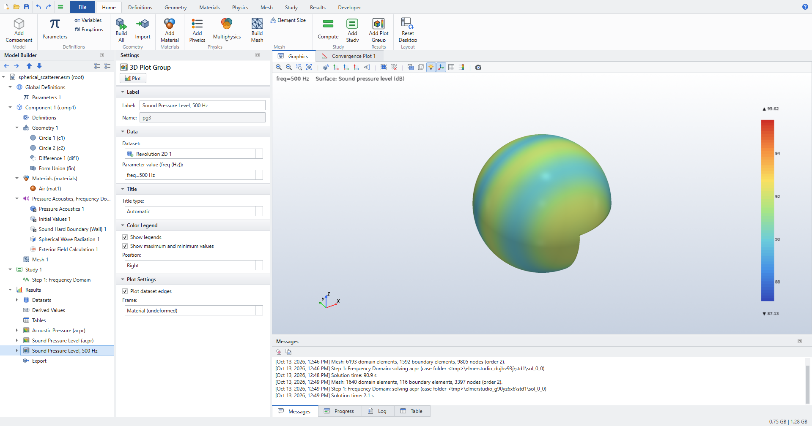
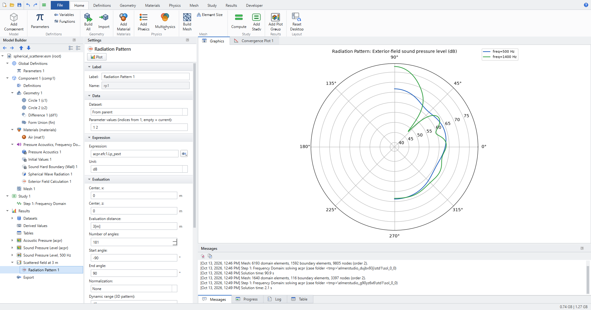
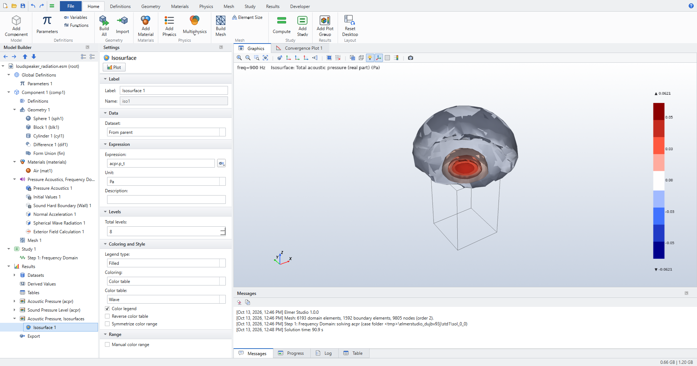
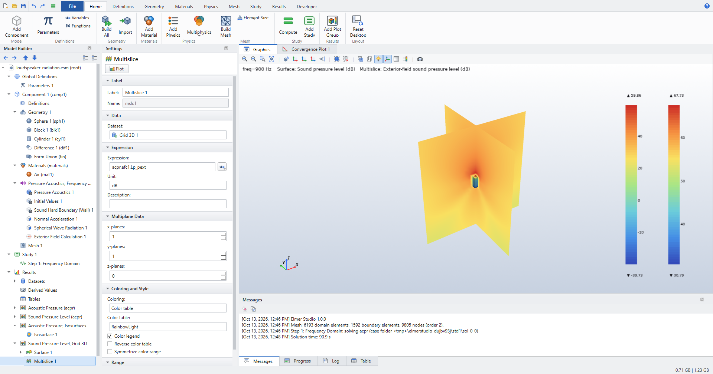
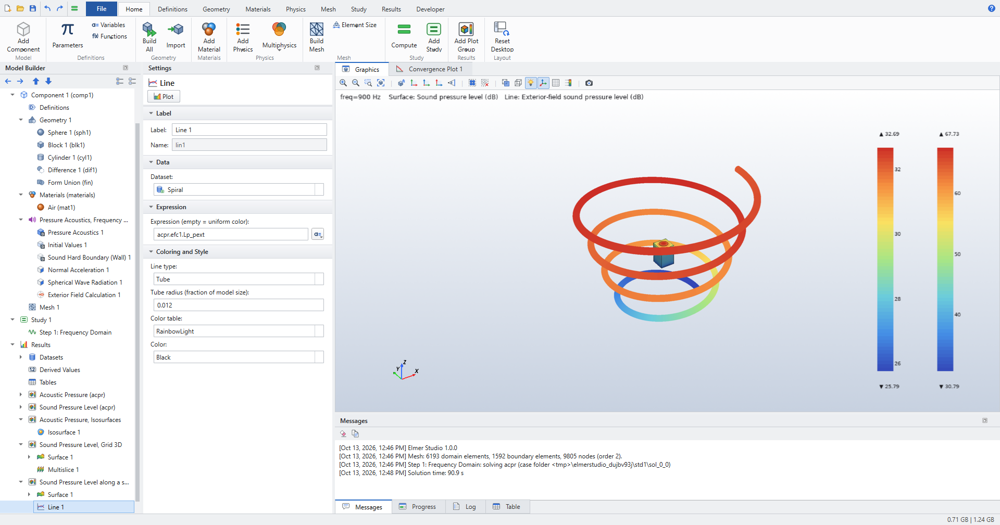
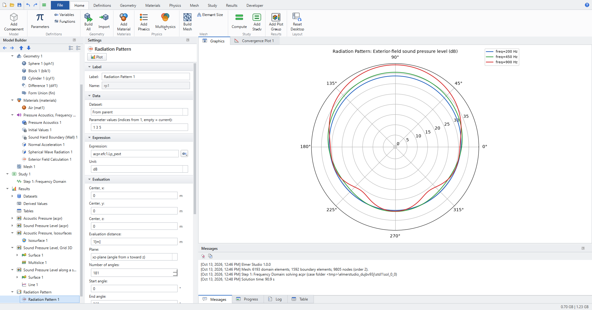
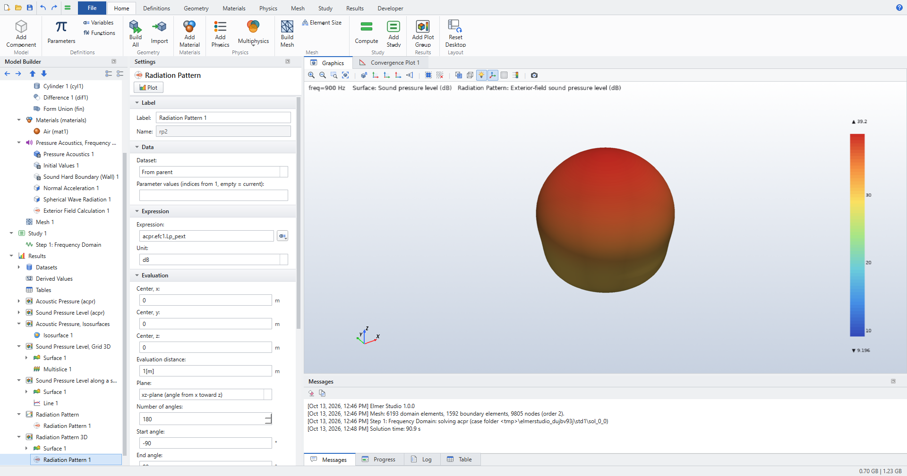
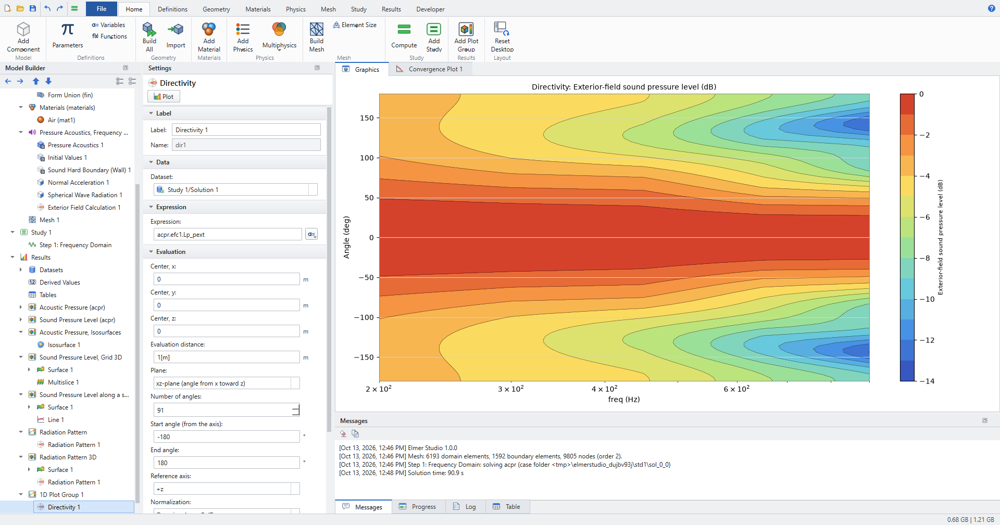

Acoustics
This tutorial covers Pressure Acoustics, Frequency Domain (acpr) in Elmer Studio: radiation and scattering problems, the field outside the meshed air domain, and the far-field plots used for loudspeakers. It follows the vented-loudspeaker part of the COMSOL guide Essentials of Postprocessing and Visualization and the COMSOL blog post How to Use the Boundary Element Method in Acoustics Modeling, with stand-in models.
What you will learn:
-
close an air domain with Spherical Wave Radiation and drive it with a Normal Acceleration or an incident plane wave;
-
compute the pressure anywhere outside the mesh with Exterior Field Calculation;
-
plot isosurfaces with a filled level legend, a Grid 3D dataset with a Multislice, and a Parametric Curve 3D;
-
draw a Radiation Pattern (polar and 3D) and a Directivity plot over frequency;
-
check the method against two closed-form solutions: a pulsating sphere and a rigid spherical scatterer.
The checked numbers come from tests/test_tutorial_acoustics.py. The screenshots come from the GUI walkthrough tools/screenshot_acoustics.py.
| Elmer has no boundary elements. Where COMSOL couples FEM with BEM or uses a perfectly matched layer, Elmer Studio closes the air domain with Spherical Wave Radiation and evaluates the field outside it with the Exterior Field Calculation, a Kirchhoff–Helmholtz integral over a closed surface of the FEM domain. Elmer’s HelmholtzSolver uses the eiωt convention, as COMSOL does. |
Concepts
| Feature or variable | What it does |
|---|---|
Spherical Wave Radiation |
Boundary condition for outgoing spherical waves (3D, 2D axisymmetric) or cylindrical waves (2D) from the Source location. Optionally adds an incident plane wave, Incident pressure field Plane wave, for scattering in the total-field formulation. |
Exterior Field Calculation |
Kirchhoff–Helmholtz integral over the selected closed surface. Provides |
|
Total acoustic pressure, real and imaginary part. |
|
Sound pressure level of the computed pressure, in dB (re 20 µPa, from the RMS value). |
|
Scattered pressure (real part) and its level, available when an incident plane wave is defined. |
See Pressure Acoustics, Frequency Domain (acpr) for every setting and Physics interfaces for how physics features are added.
| The physics-controlled mesh of an acoustics model is calibrated to at most λ/5 at the highest study frequency, so a frequency sweep refines the mesh for its top frequency. |
Pulsating sphere: verification
A sphere of radius a = 0.1 m oscillates radially in air. The air between the sphere and an outer sphere of radius 0.6 m is modeled in 2D axisymmetry. The exact pressure is
\(p(r) = \rho c\, u\, \frac{ika}{1+ika}\,\frac{a}{r}\,e^{-ik(r-a)}\)
with u = an/(iω) the velocity amplitude for the normal acceleration an = 1 m/s², and k = ω/c.
Model
-
Click , choose Model Wizard, then 2D Axisymmetric. Under Acoustics select Pressure Acoustics, Frequency Domain (acpr), click Add, then Study, choose Frequency Domain and click Done.
-
Click : Radius
0.6, Sector angle180, Rotation-90. This is the half disk on the r ≥ 0 side of the axis. -
Click : Radius
0.1. -
Click : the half disk in Objects to add, the small circle in Objects to subtract. Press F8.
-
Click and add Air. In its Material Contents table set Speed of sound to
343and Density to1.2(the values the reference solution uses). -
Click and click the arcs of the small sphere. Keep Inward normal acceleration at
1. -
Click and click the arcs of the outer sphere. Keep the Source location at the origin.
-
Click and click the arcs of the outer sphere.
-
Click Mesh 1 and set Element size to Extremely fine.
-
Click Step 1: Frequency Domain and set Frequencies to
250 500 1000. Click .
Plots
The default plot groups show the acoustic pressure and the sound pressure level in the r-z plane. To see the field beyond the mesh, click , delete Line Graph (Polar) 1 (right-click, Delete), select the plot group and click . Set Evaluation distance to 3[m], five times the mesh radius. A pulsating sphere radiates equally in every direction, so the curve is a circle.
Check the results
test_pulsating_sphere_radiation_and_exterior_field checks at 250, 500 and 1000 Hz:
-
In the mesh, for 0.2 m < r < 0.5 m, the computed pressure agrees with the exact solution within 0.2 % of its maximum.
-
The Kirchhoff–Helmholtz integral over the outer boundary gives the pressure at r = 3 m (five times the mesh radius, nine directions from −80° to 80°) within 1.5 %.
test_pulsating_sphere_3d_exterior_field repeats the problem in 3D: an outer sphere of 0.5 m, the default (λ/5) physics-controlled mesh, 500 Hz, and the Exterior Field Calculation on the outer surface. At four points 1.8 m to 2.1 m from the center (about four times the mesh radius) the exterior field agrees with the exact solution within 2 %.
Spherical scatterer: BEM benchmark
A rigid sphere of radius 0.25 m sits in a plane wave of amplitude 1 Pa traveling along +z. COMSOL publishes this case as a BEM benchmark; here the air domain (radius 1 m) is FEM, the incident wave enters through the Spherical Wave Radiation boundary, and the scattered field beyond the mesh comes from an Exterior Field Calculation on the sphere surface.
Model and study
-
Click .
-
Look at the physics features under Pressure Acoustics, Frequency Domain:
-
Spherical Wave Radiation 1 on the outer arc, with Incident pressure field Plane wave, Pressure amplitude
1[Pa]and Wave direction +z direction; -
Exterior Field Calculation 1 on the sphere surface;
-
the sphere surface itself keeps the default Sound Hard Boundary (Wall).
-
-
The study computes 500 Hz and 1400 Hz (ka ≈ 2.3 and 6.4). Click .
With an incident plane wave, the variables acpr.p_s and acpr.Lp_s give the scattered field (total minus incident) inside the mesh, and acpr.efc1.Lp_pext gives the scattered field anywhere.
|
Revolution 2D plot
-
Click . Set Dataset to Study 1/Solution 1, Start angle to
-90, Revolution angle to270and Number of layers to72. -
Click , rename it
Sound Pressure Level, 500 Hzand set Dataset to Revolution 2D 1. In the solution list below it, which reads Parameter value (freq (Hz)) for this study, choose freq=500 Hz. -
In Surface 1 set Expression to
acpr.Lp. Click Plot.

Polar plot of the scattered field
-
Click and rename it
Scattered field at 3 m. Right-click Line Graph (Polar) 1 and choose Delete. -
Select the plot group and click . Expression is
acpr.efc1.Lp_pextby default. -
Set Evaluation distance to
3[m], Number of angles to181, Start angle to-90, End angle to90and Parameter values (indices from 1, empty = current) to1 2. Click Plot.
In an axisymmetric model the angle runs in the r-z half plane, so 90° is the +z axis, the direction in which the incident wave travels. At 1400 Hz the scattered field has a strong lobe in that direction.

Check the results
test_spherical_scatterer_benchmark compares with the analytic series for a rigid sphere, at 500 Hz and 1400 Hz:
-
acpr.p_s(with its imaginary part) inside the mesh, for 1.2a < r < 0.8R, agrees within 5 % of its maximum. -
acpr.efc1.Lp_pextat 3 m, beyond the mesh, on 13 angles from 0° to 180°, agrees within 0.8 dB.
Loudspeaker radiation
The stand-in loudspeaker is a closed box of 20 × 20 × 30 cm with a piston of 6 cm radius on its top face, radiating into a sphere of air of radius 0.5 m. The piston has a normal acceleration of 1 m/s². The outer sphere has Spherical Wave Radiation and an Exterior Field Calculation, so the field is available far beyond the mesh.
Model and study
-
Click .
-
Click Step 1: Frequency Domain and set Frequencies to
200 300 450 650 900(the screenshots use these five frequencies; the example’s own list also works). -
Click . In the run shown in the screenshots the solve took about two minutes.
Isosurfaces of the pressure
-
Click and rename it
Acoustic Pressure, Isosurfaces. Right-click Surface 1 and choose Delete. -
Select the plot group and click . Set Expression to
acpr.p_t, Total levels to8and Color table to Wave. Legend type is Filled by default: the legend shows one block per level interval. Click Plot.

Grid 3D and Multislice beyond the mesh
A Grid 3D dataset is a regular grid of points. Inside the mesh it takes the computed values; the exterior-field variables are defined everywhere, so the grid can reach beyond the air domain.
-
Click . Set Dataset to Study 1/Solution 1. Set x minimum (empty = dataset bounds) to
-1.5, x maximum to1.5and x resolution (points) to35, and the same for y and z. -
Click and rename it
Sound Pressure Level, Grid 3D. -
In Surface 1 set Expression to
acpr.Lp. Right-click Surface 1, choose Selection and click the box and piston faces, everything except the outer sphere. -
Select the plot group and click . Set its Dataset to Grid 3D 1, Expression to
acpr.efc1.Lp_pext, x-planes to1, y-planes to1and z-planes to0. Click Plot.
A plot can use its own dataset inside a plot group, so the Multislice draws on the grid while the Surface draws on the solution.

Parametric Curve 3D: a spiral around the speaker
-
Click and rename it
Spiral. Set Dataset to Study 1/Solution 1, Minimum to0, Maximum to1and Resolution (points) to600. -
Under Expressions set
-
x:
(0.6+0.6*s)*cos(8*pi*s) -
y:
(0.6+0.6*s)*sin(8*pi*s) -
z:
-0.9+1.8*sThe spiral starts at a radius of 0.6 m, outside the 0.5 m mesh, and widens to 1.2 m while it rises from z = −0.9 m to 0.9 m.
-
-
Click and rename it
Sound Pressure Level along a spiral. In Surface 1 set Expression toacpr.Lpand add a Selection with the box and piston faces, as above. -
Select the plot group and click . Set Dataset to Spiral, Expression (empty = uniform color) to
acpr.efc1.Lp_pext, Line type to Tube and Tube radius (fraction of model size) to0.012. Click Plot.

Radiation Pattern, polar
-
Click and rename it
Radiation Pattern. Right-click Line Graph (Polar) 1 and choose Delete. -
Select the plot group and click . Keep Expression
acpr.efc1.Lp_pext. -
Set Evaluation distance to
1[m], Plane to xz-plane (angle from x toward z), Number of angles to181, Start angle to0, End angle to360and Parameter values (indices from 1, empty = current) to1 3 5. Click Plot.
Parameter values 1, 3 and 5 are 200 Hz, 450 Hz and 900 Hz. The piston faces +z, which is 90° in this plane. The pattern is almost round at 200 Hz and loses level toward the back (270°) as the frequency rises.

Radiation Pattern, 3D
-
Click and rename it
Radiation Pattern 3D. -
In Surface 1 set Expression to
acpr.Lp, Coloring to Uniform, Color to Gray and clear Color legend. Add a Selection with the box and piston faces. -
Select the plot group and click . Set Evaluation distance to
1[m], Number of angles to180and Dynamic range (3D pattern) to30. Click Plot.
In a 3D plot group the Radiation Pattern is drawn on a sphere of directions: the distance from the center follows the level, and values more than the dynamic range below the maximum are drawn at the center.

Directivity
-
Select Results and click . Elmer Studio adds a 1D Plot Group with a Directivity plot. Rename the plot group to
Directivity. -
Set Evaluation distance to
1[m], Number of angles to91, Start angle (from the axis) to-180, End angle to180and Contour levels to13. Keep Reference axis +z and Normalization On-axis value = 0 dB. Click Plot.
The Directivity plot shows the level against angle and frequency (on a logarithmic axis), normalized so the on-axis value is 0 dB at every frequency.

Check the results
test_loudspeaker_postprocessing solves the loudspeaker at 300 Hz and 800 Hz and checks at 800 Hz:
-
A Grid 3D dataset from −1.5 m to 1.5 m (13 points per axis) gives finite
acpr.efc1.Lp_pexteverywhere. -
No jump at the edge of the mesh: in eight directions, the level at 0.47 m (computed in the mesh) and at 0.53 m (Kirchhoff–Helmholtz integral) differ by less than 2 dB. Spherical spreading alone accounts for 1.0 dB.
-
Far away the level falls by 3 dB to 9 dB per doubling of distance (median at about 1 m minus median at about 2 m), around the −6 dB of spherical spreading.
-
The polar Radiation Pattern is labeled Exterior-field sound pressure level in dB, and the level in front (+z) exceeds the level behind by more than 1 dB.
-
The 3D Radiation Pattern draws in a 3D plot group.
-
The Directivity is 0 dB on the axis at both frequencies (to 1e-9), and no direction more than 60° off the axis is louder than 0.5 dB.
-
The level along a spiral (Parametric Curve 3D) is finite and varies along the curve.
-
Isosurfaces with 8 levels have a filled legend of 9 blocks.
Where to go next
-
Postprocessing and Visualization covers datasets, derived values, coupling operators and 1D, 2D, 3D and polar plot groups in general.
-
Application Library examples lists every example model.
-
Plot groups and plots and Datasets list every setting of the Radiation Pattern, Directivity, Grid 3D and Parametric Curve 3D.